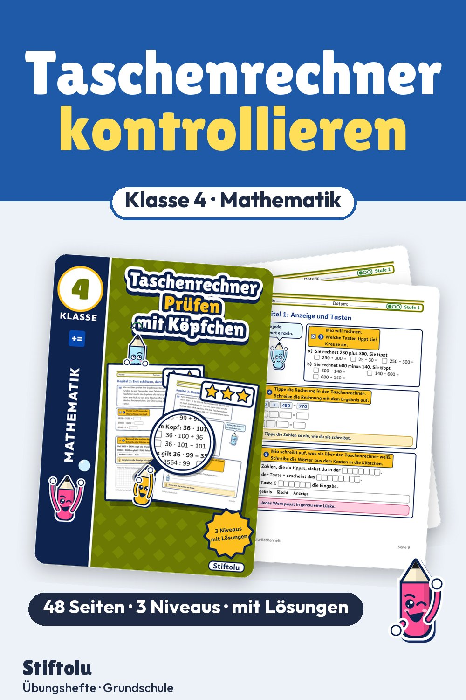

Werbung · Übungsheft von Stiftolu
Taschenrechner kontrollieren: Überschlag, Tippfehler und Umkehraufgabe, Klasse 4

Eine Null zu viel eingetippt, und das Ergebnis stimmt nicht mehr. Wie man so etwas bemerkt, üben Viertklässler hier mit Überschlag, Vergleich mit der Anzeige und Umkehraufgabe. Außerdem lesen sie die Anzeige, finden Zahlenmuster und entscheiden, wann Kopfrechnen schneller ist. Zahlen reichen bis 1 000 000, geliefert werden 48 Seiten, erhältlich auf eduki.